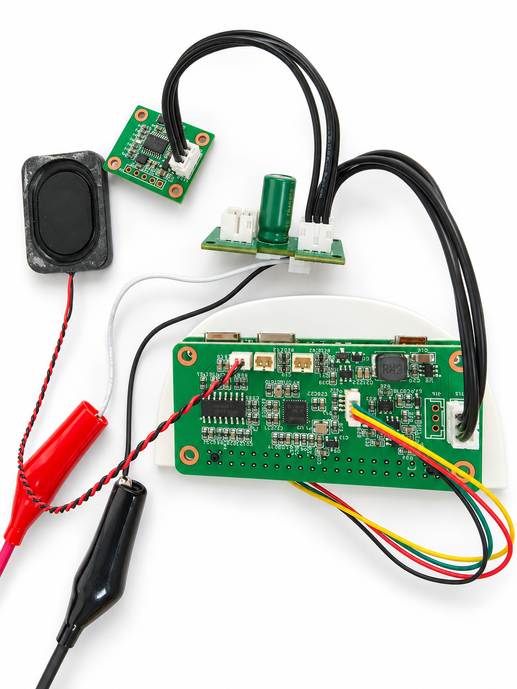

01 / TEST
Hardware tests
Inspect IMU orientation, microphone input and speaker sound. See the hardware-test wiring photo below.
Build your Microduck with kissqy: shopping, assembly, flashing and calibration, then advanced training.
Install on a new TF card or use V313 to upgrade the robot you already own. Both paths use the same desktop console.
R3 image on Baidu Netdisk · Code km52
Radxa ZERO 3W · Feetech HD1910 · Microduck 0.15.1
Connect to ZERO by SSH, then select the workspace for the operation you need.
Inspect IMU orientation, microphone input and speaker sound. See the hardware-test wiring photo below.
Scan the bus, inspect actual positions, save joint IDs and perform single-servo midpoint calibration.
Check direction, zero and limits in a dedicated workspace with a larger 3D view. Hardware faults identify the affected device.
Gamepad hints, motion controls, joint feedback, curves, camera and ToF, with existing Chinese AI in a dedicated column.
With power disconnected, connect the HAT, HUB, IMU and speaker as shown. Check supply polarity, connector orientation and board markings.
Connect to ZERO by SSH and open Hardware tests. Rotate the IMU to check orientation, speak into the microphone to check its level, then play the duck sound to test the speaker.
An IMU-only test needs no servos, numbering or calibration. The HUB passively distributes power and bus connections. The clips shown are power leads.

Follow the test-page wiring reference, supply the HAT and servos, start the desktop console and connect to ZERO.
Servos with the same or unknown ID must be numbered individually. Verified distinct IDs can be chained.
Enter Servo numbering, scan the bus, check the detected servo and choose its target joint ID. Follow the UI for an occupied-ID swap.
After all individual IDs are confirmed, reconnect the chain and scan again. Recalibrate any joint whose midpoint was changed.

| Device group | IDs |
|---|---|
| Right leg | 10–14 |
| Left leg | 20–24 |
| Neck / head | 30–34 |
| IMU | 200 · not a joint servo |
Left and right refer to the robot’s own perspective. A midpoint adjustment sets the selected current position to 2048 and requires recalibration.
Read the full release notes and illustrated installation steps →
In Armbian Imager, select the R3 .img.xz file and the target TF card. Flashing overwrites the target. Wait for verification before powering up the ZERO.
At boot, R10 tries saved Wi-Fi first. If no saved network connects, join Microduck-kissqy (password 12345678) and open http://10.42.0.1:8088. A later disconnection does not start the hotspot automatically.
Extract the ZIP. Run start.cmd on Windows or bash start.command on macOS/Linux. At http://127.0.0.1:8090, connect using the ZERO’s IP address. Check firmware under 系统维护. Verify calibration before HOME → hold → walk.